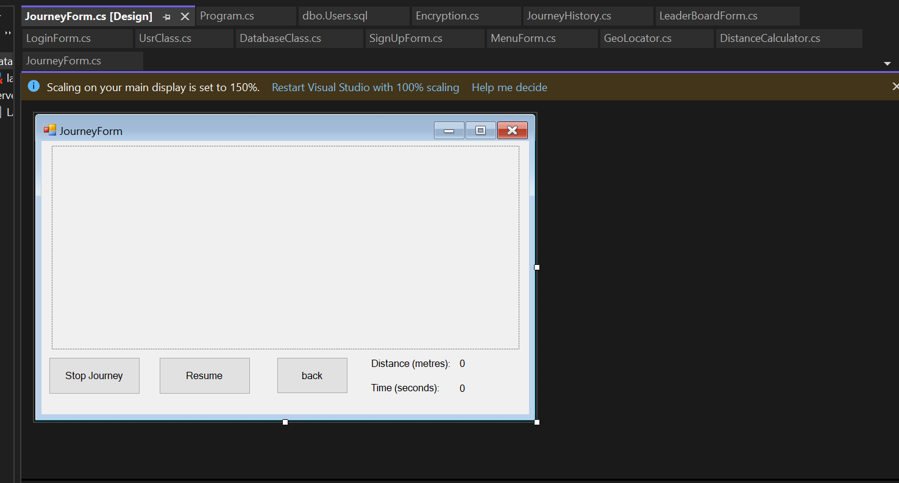
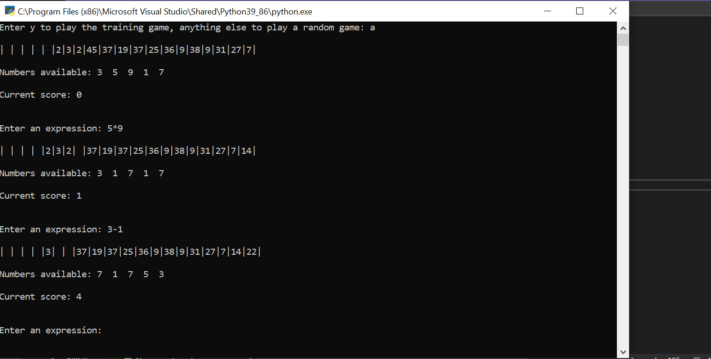
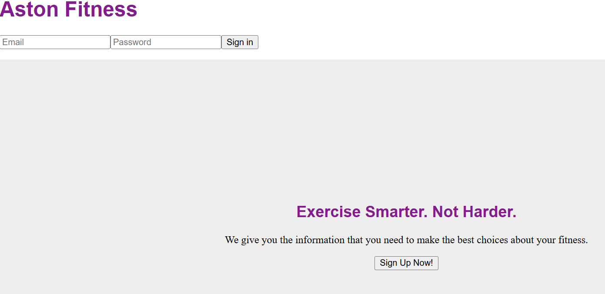

Links to prefessional profiles



This was my most favourite project i have been working on during my A level education. This is a software that uses variety of advanced features, such as Object Orientated programming, file handling, data handling, use of advanced Mathematics, use of google API and even Geo location. This allowed the user to create its own account and login through it. All data would be stored in the database. When logged in, the user will be able to start the journey while being located on google API using Geo cordinate watcher function to determine longitude and latitude of the user. Positions would be recorded every 10 seconds and using Haversine formula would determine the total distance travelled. Distance would be Recorded and saved in the database which would be used to display a ranking of the user among others. This entire program was made in C# which made me get out of the comfort zone of using python, and learn a new language.

This is a skeletal code that i have been using during the sixth form. I have been Slightly modifying it so it would have variety of more functions. This skeletal code is a game that displays the list of numbers that you have to obtain using the operands that you are given for your own list and all the operators such as addition, subtraction, multiplication, division and indicies. The main target is to clear the target numbers list before numbers will reach the left side to the list. Every turn, the list will shift the numbers by one index, but won't move if the target number has been achieved. You get a point for getting a number, and lose a point if you don't get a number. This tested my knowledge in how to use Regex to validate user input, and how to utilise subroutines and functions to link with each other. I have been adding some of my own features such as making hard mode which allows to shift the taarget list by 2 indexes, and even the undo feature to undo any changes that the user has made previously.

This was a project that had a main purpose to teach me how to use HTML, CSS, and Javascript. My task was to recreate the website of my university that advertises fitness sports in order to encourage user to participate in sport events. This project has single handedly put me into the intermediate level for html css and javascript coding, which helped me gain knowledge on how to create a basic website. Html would be used for content upload such as images, text, links and many forms of inputs like buttons and textboxes. CSS helped me to improve the appearance of the content, making it more aesthetically pleasing and more entertaining to look at. I used variety of vibrant colours and change the position of text to make it look organised and the layout well consistant. Java script helped me coding the behaviour of the input controls and validations such as checking if the email and confirm email is the same, and making sure that the user selects at least 1 thing on bullet points. Java script was a lot similar to C# in my opinion so it was not anything new. But overall, i am glad that i have done this challenge because if i wouldn't, this website would not exist.